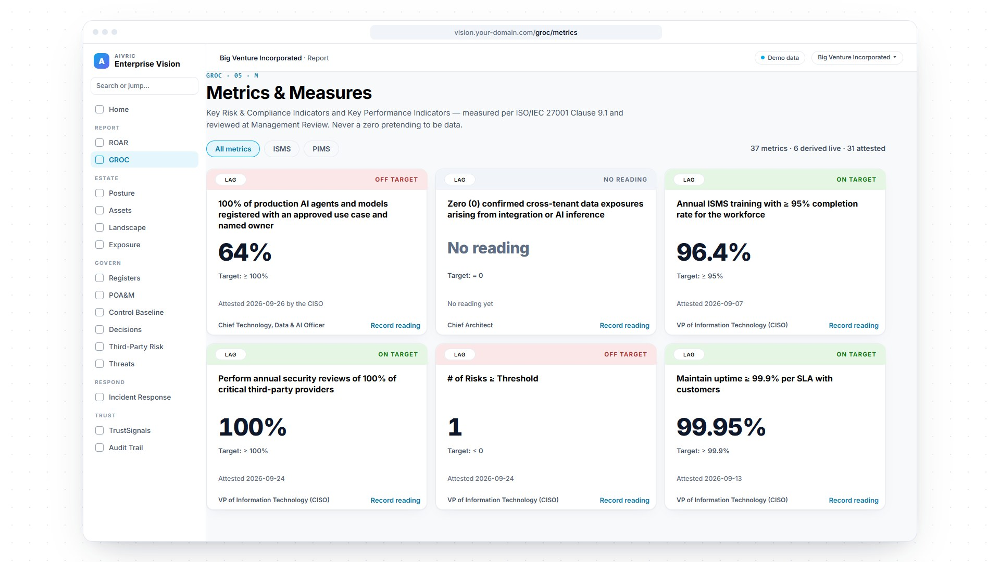

EU AI Act compliance · AI governance · AiVRIC Enterprise VisionDeferred. Not cancelled.
Deferred High-risk (Annex III) now applies December 2, 2027
In effect Prohibitions, AI literacy, general-purpose AI and transparency rules
The Digital Omnibus on AI deferred the EU AI Act’s high-risk deadline to December 2, 2027. The bans, the AI literacy duty and the transparency rules already apply, and a new prohibition follows on December 2, 2026. AiVRIC Enterprise Vision gives you the AI inventory, the controls, the policy, the oversight and the audit trail to be governed before the dates arrive.

Screens rebuilt from the Big Venture Incorporated demo workspace in Enterprise Vision. All figures are sample data. Not legal advice.
What is the EU AI Act?
A law that sorts AI by the harm it can do.
The EU AI Act (Regulation (EU) 2024/1689) sets rules for AI systems placed on the EU market or whose output is used in the EU, wherever the provider is based. The European Commission describes it as the first-ever comprehensive legal framework on AI worldwide. It sorts AI by risk: some practices are banned outright, high-risk systems carry the heaviest duties, and systems that interact with people must say so. General-purpose AI models have rules of their own.
Unacceptable riskSocial scoring, emotion recognition at work, manipulative techniques. Banned since Feb 2, 2025, with a new prohibition from Dec 2, 2026.
High riskHiring, credit, education, critical infrastructure and the other Annex III areas: risk management, human oversight, logging and documentation, from Dec 2, 2027.
Transparency riskChatbots, deepfakes and AI-generated content must be disclosed or labelled. Applies since Aug 2, 2026.
Minimal or no riskSpam filters, forecasting, code assistants. No new duties beyond supporting AI literacy.
EU AI Act timeline · as amended by the Digital Omnibus
Three dates have passed. Three more are set.
- Feb 2, 2025Prohibitions · literacy
Prohibited AI practices (Art. 5) and AI literacy (Art. 4).
- Aug 2, 2025General-purpose AI
General-purpose AI model obligations, governance and penalties; fines for model providers from Aug 2, 2026.
- Aug 2, 2026Transparency
Transparency obligations (Art. 50) for chatbots and AI-generated content, and the Act’s general date of application.
- Dec 2, 2026New prohibition
Non-consensual intimate deepfakes and AI-generated child sexual abuse material banned; generative systems already on the market must mark their output.
- Dec 2, 2027High risk · Annex III
Risk management, data governance, logging, human oversight and documentation for high-risk uses. Was Aug 2, 2026.
- Aug 2, 2028High risk · Annex I
AI in products already covered by EU product-safety law. Was Aug 2, 2027.
Dates as amended by the Digital Omnibus on AI, Regulation (EU) 2026/1744, in force since July 27, 2026. It deferred the high-risk dates; it did not remove the obligations. High-risk systems used by public authorities have until August 2, 2030. AI Act · Digital Omnibus on AI · Article 113, as amended
AI governance framework · seven words
From “what AI do we run?” to proof.
6AI governance controls imported into the baseline in one pass
64%of production AI systems registered with an owner and an approved use: 7 of 11
v1.0AI acceptable use policy approved, published and frozen
67audit events verified: the hash chain is intact
Figures from the Big Venture Incorporated demo workspace (sample data), Sep 26, 2026.
Free tool · EU AI Act risk tier check
Which of your AI uses are high-risk?
Tick the ways your organization uses AI. We’ll sort them into the Act’s risk tiers and show which date applies. Your answers stay in this browser. It’s a first pass, not legal advice.
Tick a use to see its tier.
Book an AI governance walkthroughAI governance in AiVRIC Enterprise Vision
Your AI program, in your own workspace.
What you run
From the inventory to the record.
- Track your AI inventory as a measured metric, with an owner for every system
- Import AI governance controls mapped to the Act’s articles, designed to support ISO/IEC 42001 programmes too
- Publish your AI acceptable use policy and set the board’s AI tolerance
- Raise oversight gaps as POA&M findings, each with an owner and a date
Where it runs
Your deployment, your record.
- SaaS, self-hosted or air-gapped, with EU data residency available
- Single tenant: your data in your own workspace
- Named users only, with single sign-on and MFA at your identity provider
- Every control, decision and action on an append-only audit trail
Questions
What leadership asks first.
What is the EU AI Act?
The EU AI Act, Regulation (EU) 2024/1689, is the European Union’s law on artificial intelligence. It bans a short list of practices, sets strict duties for high-risk AI systems, requires transparency when people interact with AI or see AI-generated content, and regulates general-purpose AI models. The Digital Omnibus on AI, Regulation (EU) 2026/1744, amended it in July 2026.
Does the EU AI Act apply to US companies?
Yes, if you place AI systems on the EU market or put them into service there, or if the output of your AI system is used in the EU. Where your company is based doesn’t change that.
When do the high-risk obligations apply?
December 2, 2027 for the high-risk uses listed in Annex III, such as employment, credit, education and critical infrastructure; August 2, 2028 for AI in products covered by EU product-safety law (Annex I); and August 2, 2030 for high-risk systems used by public authorities. The Digital Omnibus set these dates in July 2026; before it, the first two were August 2026 and August 2027.
What counts as a high-risk AI system?
AI used in the areas listed in Annex III: biometrics, critical infrastructure, education, employment and worker management, access to essential services such as credit scoring (not fraud detection) and life and health insurance pricing, law enforcement, migration, and the administration of justice. Screening job applicants is a common example. The Commission’s guidelines on classifying high-risk systems are still a draft.
What are the fines under the EU AI Act?
Up to €35 million or 7% of total worldwide annual turnover, whichever is higher, for prohibited practices; up to €15 million or 3% for most other obligations, transparency included; up to €7.5 million or 1% for supplying incorrect information. SMEs, start-ups included, pay whichever is lower, and since 2026 small mid-caps do too, except for prohibited practices.
What is AI literacy under Article 4?
Article 4 asks providers and deployers to take measures to support AI literacy among the staff who operate and use their AI systems. It has applied since February 2, 2025. The Digital Omnibus rewrote it in 2026, and it no longer sets a required level for each individual; role-based training, on the record, is the practical way to show it.
How does ISO/IEC 42001 relate to the EU AI Act?
ISO/IEC 42001 is a voluntary standard for an AI management system. It isn’t a harmonised standard under the AI Act and doesn’t by itself give a presumption of conformity. The first harmonised standard, EN 18286:2026 on quality management (Article 17), was cited in the Official Journal on October 14, 2026, and the Commission describes it as designed to sit on top of management systems such as ISO/IEC 42001. Enterprise Vision’s AI governance controls are designed to support ISO/IEC 42001 programmes as well as the Act.
Deferred. Not cancelled.
See your AI program in AiVRIC Enterprise Vision. Bring your questions, and we’ll walk you through the inventory, the controls, the policy and the oversight record on real screens.
Screens show sample data from a fictitious demo workspace. This page summarizes the EU AI Act for planning purposes and is not legal advice.